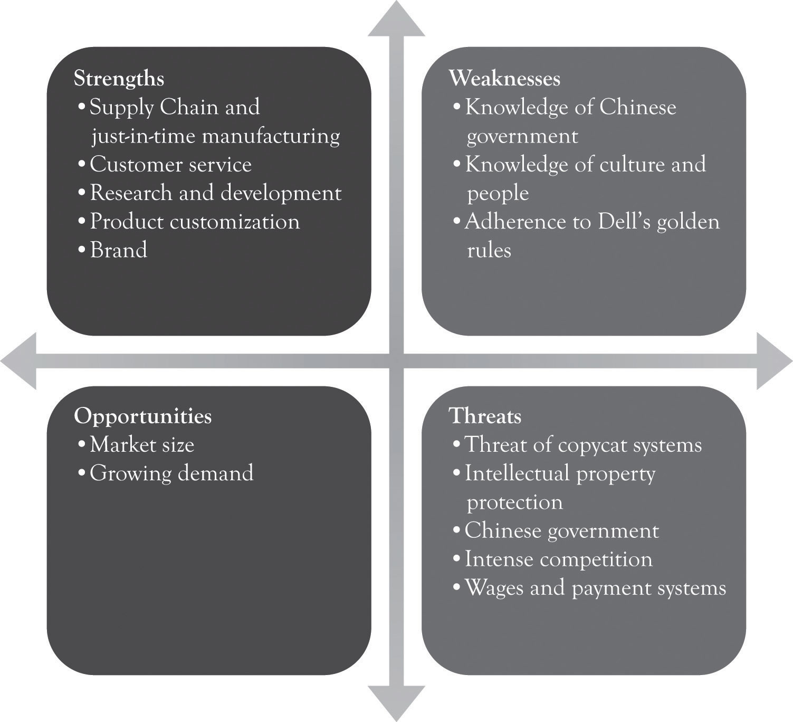

To be strategic is to have plans of action that provide directions for operating in an uncertain world. In this section, our focus is on developing strategic plans to compete in a world characterized by monopolistic competition. Notice that the emphasis is on plans of action and not on a single plan. There is no single plan or single planning approach that can deal with the complexity of contemporary markets. What is needed is a continuous process for churning out new plans, for differentiated products and services, in order to compete in a dynamic environment. This chapter presents a brief overview of the various approaches to strategic planning and provides an overview of the planning literature. There is a lot of material to slog through, but each approach to planning has something to offer. This overview will set the stage for presenting the Ten–Ten planning process in the next chapter. The next chapter will integrate the various planning approaches and present a simplified, yet robust approach to planning called the Ten–Ten planning process. The key benefit of the Ten–Ten planning process is that it can be used for developing business plans in a very short time span.
There are two generic planning strategies that a business can pursue.Michael Porter originally identified three generic strategies. He noted that a business can also focus on a market that is not very competitive. Most people consider this to be a special case of the other two strategies. See Porter (1980). It can strive to be efficient, it can differentiate, or both. In other words, a firm can focus on delivering Midas versions of products, Hermes versions of products, or both. A firm that employs a strategy of efficiency strives to be the low-cost producer and compete on the basis of charging less than the other competitors. In contrast, a firm that is competing on the basis of product differentiation can charge premium prices. If charging premium prices yields larger-than-average profits, the market will, of course, attract attentions. Competitors will enter the market with a slightly different product, perhaps even a better product, at a lower price and ultimately drive down the premium prices. The firm will then have to embark on further cost-cutting initiatives, improve their product in order to hold on to market share and survive, or do both. The market is relentless and it demands a two-pronged approach of developing differentiated products and services and cutting costs.
The first mantra of the entrepreneur is “differentiate through innovation or perish” or in simpler terms “differentiate or die.” The second mantra of the entrepreneur is “strive to reduce costs.” The first mantra is accomplished by focusing on Midas versions of products using extravagant engineering and design. Differentiation is not only the engine driving business success under monopolistic competition, but it is also buttressed by attempting to improve costs and product design through frugal engineering. The second mantra is accomplished by focusing on Hermes versions of products using frugal engineering.
As noted earlier, over 99% of the approximately 23 million businesses compete in markets that are characterized by monopolistic competition. That is there are many buyers, many sellers, market entry and exit is easy, and the products are closely related but not identical. There are the two approaches for differentiating products. The first uses marketing and advertising to develop a brand. The second approach is to engage in product development through some sort of research and development (R&D) process and to develop goods and services with updated features. Both approaches are necessary parts of the differentiation process. Marketing and advertising can help illustrate the features and can sometimes delay encroachment by the competition. But in the long run (probably less than a year), successful differentiation depends on product development and R&D.
Planning can be accomplished in a variety of ways. Figure 8.1 "The Planning Process (Adapted from May)" presents a typical model of the strategic planning process.Adapted from May (2010). The mantraAn often-repeated phrase that provides the basis for a company’s existence. is an often-repeated phrase that provides the basis for the existence of the company. It is a slogan, a watchword, a byword, or a motto that breathes life into the firm’s existence. The mantra is not a replacement for the mission statement. The missionAn overall view of the business at an abstract level. It describes what the company does, why it exists, and how it satisfes customer needs. statement is an overall view of the business at an abstract level. It describes what the company does and why it exists and how it satisfies customer needs. The mission statement can also include a statement reflecting whether the company will focus on product differentiation and niche markets, focus on being price-competitive, or focus on both. The mantra and the mission are rarely static but ever-changing and emerging throughout the life of the firm.
The essence of the planning process consists of looking-inside and looking-outside analysis. AnalysisInvolves both introspection and extrospection. involves both introspection and extrospection. The internal and external organization environments are examined using a number of analytical approaches, several of which are included in Table 8.1 "Orientations of Strategic Planning Approaches". These techniques will be covered in the next section. There is a lot of confusion related to identifying goals and objectives. Many view the terms goals and objectives to be interchangeable. GoalsMore abstract and broader than objectives. are more abstract and broader than objectives. ObjectivesMore detailed than goals. are generally more detailed. The important point that will be discussed in the next chapter is to identify the goals and objectives that will help support the mantra, the mission, and the value proposition over a certain time frame. The tacticsThe activities the organization will use over the next three months to a year to reach their goals and objectives. are the activities the organization will use over the next 3 months to a year to reach their goals and objectives. The tactics can include timetables and schedules related to the goals and objectives. The key to the model in Figure 8.1 "The Planning Process (Adapted from May)" is that this is not a linear process. Sometimes a new mission emerges after analysis has been completed. Mission statements that change, reflect an organization that can adapt to dynamic environments.
Figure 8.1 The Planning Process (Adapted from May)
Table 8.1 Orientations of Strategic Planning Approaches
| Inter organizational focus | External competitive environments focus | Time to execute | |
|---|---|---|---|
| Value and supply chain analysis | High | Low | Moderate |
| Porter’s five force model | Low | High | Long |
| Resource-based framework | High | Moderate | Long |
| Strategy maps | High | Moderate | Long |
| Creating Blue Ocean markets using the strategy canvas | Moderate to high | Moderate to high | Short |
| SWOT analysis | Moderate to high | Moderate to high | Short |
We will revisit the definitions in the next chapter and illustrate how the planning process can be streamlined and made more efficient and facilitate the development of business plans in a very short time span using the Ten–Ten planning process.
There are a number of analytical approaches that can be used to develop a process for churning out new plans for differentiation. We will review several of the more popular strategic planning approaches because they all provide insights into the differentiation process. A discussion of planning concepts can be at times boring; however, such discussion is also crucial for developing good plans.
The approaches to be discussed include value chain and supply chain analysis, Porter’s five-force model, the resource-based framework, the use of Strategy Maps, creating Blue Ocean markets using the Strategy Canvas, and SWOT (Strengths, Weaknesses, Opportunities, and Threats) analysis. As illustrated in Table 8.1 "Orientations of Strategic Planning Approaches", each of the approaches can be classified as having an internal organizational focus (looking inside) or an external environmental focus (looking outside). Several of the strategic analysis approaches are better for understanding the organization and others are better suited for understanding the competitive environment. This table illustrates that there is no “best” approach for conducting strategic analysis and that a combination of approaches is necessary for completing an examination of the inner workings of an organization as well as the organizational context. Each of the strategic analysis tools will be covered in this chapter.
Value chain analysisA framework developed by Michael Porter that divides the company into primary and secondary activities related to delivering a product or service. is a framework developed by Michael Porter that divides the company into primary and secondary activities related to delivering a product or service.Porter (1985). The primary activities include inbound logistics, operations, sales and marketing, and outbound logistics. The secondary activities are supporting activities and include the firm infrastructure, human resources, information technology, and procurement. Figure 8.2 "The Value Chain (Adapted from Porter)" illustrates the components of the value chain.
A closely related concept is the supply chain. A supply chainThe connected activities related to the creation of a product or service up through the delivery of the product to the customer. is defined as the connected activities related to the creation of a product or service up through the delivery of the product to the customer. It includes upstream suppliers as well as downstream activities such as wholesalers and distribution warehouses. Figure 8.3 "Supply Chain" illustrates the supply chain.
In general, the terms value chain and supply chain can be used interchangeably; although the value chain is rooted in the strategic planning literature, the supply chain is linked to the work in the operations management area. The key concept is that products and services have to be created and eventually delivered to consumers and the in-between activities can be referred to as the supply chain or the value chain.
Figure 8.2 The Value Chain (Adapted from Porter)
Figure 8.3 Supply Chain
The supply chain is an important visual tool because it can be used to understand where to look for processes that can be reengineered. That is, improvements can be made in connecting, coordinating, and controlling activities across linkages. It can also be used to determine what kind of information should be gathered to improve communications throughout the value chain and where value chain performance could be improved. For example, the firm can investigate where information technology can be marshaled to support the supply chain activity and where technology can be used to automate tasks. The goal, of course, is to reduce transaction costs up and down the supply chain.Coase (1937). Transaction costsThe effort that goes into choosing, organizing, negotiating, and entering into agreements for products and services. refer to the effort that goes into choosing, organizing, negotiating, and entering into agreements for products and services.Williamson (1985). Transaction costs come in a variety of flavors and there is significant overlap among the various costs.
Michael Porter has also developed a technique for assessing the desirability of competing in a particular industry and how a firm can compete in that industry.Porter (2008). Porter’s five-force frameworkHow the buyers, sellers, suppliers, current competition, and threat of competition from substitute products influence the competitive environment. considers the buyers, the sellers, the suppliers, the current competition, and the threat of competition from substitute products. The key idea is that a firm can be more profitable by understanding how the five forces influence the competitive environment, as will be explained next.
Threat of new entrants. This is the degree to which entry into an industry is easy to accomplish. If it is easy to enter an industry and start competing, then there is a threat of new entrants. If an industry has high fixed costs, such as in the case of semiconductor manufacturing, auto manufacturing, or operating systems construction, then there is a low threat of entry. This is in contrast to the situation where entry is easy and relatively inexpensive such as found in online retail stores, home maintenance businesses, and restaurants.
Entry into a market can of course be precluded because of the scarcity of expertise and resources. For example, in the late 1990s, there were very few individuals with expertise in Enterprise Resource Planning systems and in COBOL to handle the Y2K date problem. Numerous firms turned toward India and Singapore to find employees with skills in these areas.This is in part the reason that outsourcing and off-shoring started to increase so dramatically. Resource scarcity can also limit entry into a market. Examples of industries where resource scarcity is critical include diamond mining, where DeBeers owns a substantial amount of the diamond resources, and oil production where Exxon has access to oil production and installed refining capability.
Threat of substitute products. Substitute products are a constant threat in contemporary commerce. If another product can be substituted for a product in the industry under consideration, then there is a threat of substitute products. It is sometimes impossible to know where your competition will come from. For example, video and audio content can be delivered via satellite, wireless, coax cable, cat 5, and fiber optics. The content can in turn be delivered to a variety of devices including mobile phones, televisions, iPODs/MP3 players, game consoles, DVRs, and computers. A similar situation exists for transportation. You can travel via electric car, bus, and air or in the future, by way of a personal jet craft or some type of Segway device. Indeed content delivery can be a substitute for transportation. As video and audio becomes more robust and easy to use, it may be possible to be there without actually being there. Families will soon get together by linking-up and interacting with their plasma and LCD screens using a high bandwidth carrier to communicate video and audio feeds of a birthday party or anniversary. This has already occurred in businesses with the emergence of virtual meetings. This brings up another issue. People set aside a certain amount of dollars for entertainment. However, although technology is not a perfect substitute for entertainment outside of the home, it can be a substitute for spending on entertainment. Thus, a console or a game might threaten the launching of a new movie during the holidays or vice versa.
Bargaining power of buyers. If individuals, companies, or groups of companies can influence the price and the features required in a product or service, then the buyers have the bargaining power. This often occurs when there are few buyers or when the buyer is large. The auto companies have bargaining power over the component manufactures. The same goes for Dell’s component suppliers and Wal-Mart’s suppliers. When a buyer is large and switching costs are small, then the buyer has the bargaining power. Wal-Mart is in such a position with its suppliers. Dell, however, has less buyer power because it cannot simply switch the component suppliers because desktops systems are built around integrated components and the performance of the system can be adversely impacted when components are not integrated.
Bargaining power of suppliers. If a company supplying a product or service can dictate the terms of the transaction, then the supplier has the bargaining power. The bargaining power of suppliers can be derived from many factors including the scarcity of the resource or technology, the number of suppliers, the characteristics and features of the technology, whether the technology is proprietary, and even the brand image. Intel and Microsoft have some bargaining power over Dell, but the hard drive, dram, motherboard, and monitor manufacturers have less bargaining power. The power supply and case manufacturers have even less bargaining power with Dell. The game console and global positioning system (GPS) manufactures have some power over Wal-Mart when they introduce a new model, but a holiday candle manufacturer has much less power. In many ways, the bargaining power is related to the threat of new entrants and the threat of substitute products or services. The key issue surrounding the bargaining power of suppliers is the availability of other sources of the products and services. If alternative or second sourcing is available, then the bargaining power of the supplier is lessened.
Rivalry among existing competitors. This is the degree to which there is competition among the firms. When there are several competitors and the products they are selling are fairly standard or readily obtainable and the competitors cannot easily leave the industry, then the rivalry will be intense. Examples of intense rivalries include breakfast cereals, flash memory, dram and electronics industries, housing construction, online and offline retailing, and the airline industry. Intense rivalries among competitors are again driven by the threat of new entrants and the threat of substitute products and services. In this context, product differentiation is essential in order to reduce the ruinous effect of perfect competition. This is the reason that the producers of GPS systems are constantly refining and adding features to their product line. Airlines, breakfast cereal producers, and the housing industry are constantly looking for ways to differentiate their offerings and at the same time reduce costs.
The five-force model can be used as the basis for conducting an industry analysis. The goal of an industry analysis is to understand the dynamics of competition and to ascertain how the five forces influence profitability. The following steps are used for conducting an industry analysis:
Porter’s five-force model provides an overarching view of the competitive environment and is extremely helpful for understanding the competitive environment. It does, however, have several deficiencies. First of all, it takes a long time to conduct a full-blown exposé of the five forces because many devotees to the approach tend to overanalyze the industry and the competition. This in turn leads to organizational fatigue. Overanalysis is related to the second deficiency. The ideas are very abstract and broad, and the technique requires consulting expertise in order to be applied effectively. Finally, it takes too long to implement for small organizations. For the entrepreneur working under extreme pressure, under the umbrella of monopolistic competition, there is very little time to attend to apply the approach effectively. Even though Porter’s ideas are very powerful, they do not resonate with the entrepreneur because they are abstract and difficult to apply.
The resource-based viewSome organizations are more competitive because they have access to unique resources or special capabilities and competencies., also referred to as RBV, is very popular with academics. The intellectual foundations for the RBV approach are many, but the work by Prahalad and Hamel on core competenciesPrahalad and Hamel (1990). and the work by BarneyBarney (1991). on the link between resources and sustained competitive advantage established a strong foundation. The basic idea of RBV is that some organizations are more competitive because they have access to unique resources or special capabilities and competencies. ResourcesCan be tangible or intangible and include raw materials, land, brand, knowledge and expertise of people, reputation with customers and suppliers, plants, equipment, patents, trademarks, copyrights, and funds. can be tangible or intangible and include raw materials, land, brand, knowledge and expertise of people, reputation with customers and suppliers, plants, equipments, patents, trademarks, copyrights, and funds. A capability or competenceThe ability of a firm to turn its resources into customer value and profits. Also known as capability. is the ability of a firm to turn its resources into customer value and profits. Capabilities or competencies can be manufacturing prowess, order fulfillment and delivery, customer service, marketing, finance and accounting, management expertise and leadership, and in essence any proficiency or prowess in the supply chain and value chain.
Porter’s five force model, and the accompanying industry analysis, tends to focus on locating a firm in an attractive industry and then taking steps to achieve competitive advantage over rival firms. In contrast, the RBV approach suggests focusing on competitive arenas where the firm has unique resources and competencies. For example, if you own property with rich productive topsoil, if your workers are diligent, and if your daughter is an excellent agronomist, you will probably be a successful farmer. The key to being successful in the context of RBV is that the resources and competencies are hard to imitate and help to establish a strong basis for competitive advantage. In essence, the status of the internal resources and competencies will assist in pursuing a particular strategic direction. Amazon has a core competency in selling online and it simply kept pursing that competency by selling construction tools, electronics, audio books, eBooks, and developing partnerships with brick and mortar vendors. Most of Google’s successful ventures are related to its core competency of search. Joan’s foray into the jewelry box business discussed earlier was linked to her excellent craftsman skills. Joan had a core competency in jewelry box design and fine woodworking.
Core competenciesThe very critical skills that define an organization. are the very critical skills that define an organization. For Google, it is their search capability, for Amazon it is their ability to sell online, and for Joan it is her prowess at jewelry box design and her knowledge of the marketplace. In the case of Joan, her knowledge and skills can probably be imitated and replicated in a shorter time frame than the competencies developed by Amazon and Google. But of course, Joan’s jewelry box business is more agile and can change direction much faster than Amazon and Google. Eventually, all capabilities and competencies (even Amazon and Google’s) can be imitated, replicated, and improved. Even scarce resources and monopolies can succumb to the onslaught of new technology, time, and market forces. There are substitutes for oil, diamonds, and operating systems.
The RBV is a powerful idea for understanding strategic direction, but it has several deficiencies. First of all, it is very broad in scope and hard to implement as part of a concrete business plan. Delineating the unique capabilities, competencies, and resources and then using this information in strategic planning are time-consuming. In addition, there is little guidance on how to build competencies. Indeed, some theorists believe that core competencies cannot be built but simply emerge. For additional discussion on RBV, see HenryHenry (2007). and Grant.Grant (2007). Later on, we will discuss how this approach can be effectively integrated with SWOT analysis and, in the next chapter, we will discuss how this approach can be integrated with the Ten–Ten planning process.
A strategy mapA visual diagram that represents a causal structure of an organizational strategy. is a visual diagram that represents a causal structure of an organizational strategy. The strategy map is an outgrowth of the balanced scorecard approach developed by Robert Kaplan and David Norton.Cf. Kaplan and Norton (1996, January–February, 2003b) and visit http://www.balancedscorecard.org/BSCResources/AbouttheBalancedScorecard/tabid/55/Default.aspx The purpose of the balanced scorecardThe purpose is to develop a series of measurable performance indicators that are linked and aligned with organizational missions and objectives. is to develop a series of measurable performance indicators that are linked and aligned with organizational missions and objectives. MeasurementUsed to identify where management should redirect its attention and to identify whether best practices are already in place. at the operational and tactical levels is a key part of the balanced scorecard approach and essential for developing and benchmarking best practices. Measurement can be used to identify where management should redirect its attention and also to identify whether best practices are already in place.
There are four primary areas where performance indicators can be used. They are the financial performance indicators, customer performance indicators, performance indicators related to internal organizational processes, and performance indicators related to the ability of the organization and employees to innovate and learn. The strategy map is an overview of the causal relationships related to the four perspectives. Figure 8.4 "Example of a Strategy Map for a Railroad" is an example of a strategy map for a railroad. You are encouraged to use Google’s image search using the keyword strategy map for additional examples.
In general, the balanced scorecard/strategy maps approach is more suitable for older larger organizations with a lot of time for developing and executing a strategic plan. Kaplan and Norton point out that a strategy map presents an integrated overview of the outcome measures and the performance drivers of outcomes using cause-and-effect relationships. The strategy map can serve as a strategic measurement system and strategic control system that align departmental and personal goals with overall strategy.Nørreklit (2000). There are, however, problems in assumptions and the time it takes to implement the approach.Nørreklit (2000). The first problem is that the approach is too hierarchical and not particularly suitable for dynamic and complex environments. Some researchers also question the causal relationships among the variables. For example, are there causal links related to enhancing cost control leading to increases in the rate of competitiveness, which in turn are leading to improvements in customer satisfaction?Nørreklit (2000). In essence, does cost control always lead to customer satisfaction through competitiveness? One hopes that this is the case, but it is not easy to verify from both research and practice perspectives.
Figure 8.4 Example of a Strategy Map for a Railroad
From the public sector, permission of Wikimedia Commons License Agreement, http://commons.wikimedia.org/wiki/File:StrategyMap.jpg.
The major problem from an entrepreneurial perspective is that the balanced scorecard approach using strategy maps approach is very complex and difficult to implement. In general, strategy maps and the balanced scorecard approach are more applicable to relatively mature companies and are not conducive to new venture development. New ventures, whether they are intrapreneurial or entrepreneurial, need a more adaptive and agile approach. A customer orientation, with an attention to securing and reducing the cash burn rate, a focus on executing the plan by attending to developing internal processes, and focusing on R&D and learning are the most important takeaways from the balanced scorecard/strategy maps approach.
As noted throughout the earlier chapters we believe that the Blue Ocean concept is an important contribution to the strategic planning literature.Kim and Mauborgne (2005). The idea is very similar to the so-called killer-app concept and lateral marketing approach. The goal of the Blue Ocean approach is to identify uncontested market spaces for profit and growth rather than compete in traditional Red Ocean market spaces where there is a tendency to focus on either cost-cutting or differentiation. Table 8.2 "Red Versus Blue Ocean Strategy" illustrates how the concepts developed in the book with Midas, Atlas, and Hermes products relate to the Blue Ocean concepts. This process of developing a Blue Ocean market is facilitated by developing the Strategy Canvas and by using the FAD template as an input into the Strategy Canvas.
This is in contrast to the competitive strategy approachWhere a large and growing already-served market is identified and the entering firm tries to find a way to compete. where a large and growing already-served market is identified and the entering firm tries to find a way to compete. Several research projects have been conducted on the efficacy of the Blue Ocean approach, and the results suggest that organizations pursuing Blue Ocean markets can in some instances be successful. A Blue Ocean strategy that is focused on intense innovation and on product differentiation and brand creation has been found to be profitable.Burke, Stel, and Thurik (2009). The Blue Ocean approach apparently helps to insulate a firm from intense competition. In many instances, Blue Oceans are not completely blue, but rather have patches of red. The net effect is that it is sometimes necessary to find a niche in a large market and then use Porter’s five-forces model to assess the desirability of competing in a particular industry and how a firm can compete in that industry. The key idea is that a firm can be more profitable by understanding how the five forces influence the competitive environment. The most important part of the Blue Ocean approach is to assist in identifying strategic opportunities for product differentiation using the Strategy Canvas. This was discussed in an earlier chapter where we used the FAD template to develop a Strategic Canvas for the Nintendo Wii.
Table 8.2 Red Versus Blue Ocean Strategy
| Red Ocean | Blue Ocean |
|---|---|
| The major goal is to beat the competition in an already established market space. | The major goal is to make the competition irrelevant and superfluous by developing a new product or service in a new market space. |
| Compete on the existing demand curve in the existing market space. Growth is slow. | Compete and capture a new uncontested demand curve in a new market space. Growth is above average. |
| Develop either Midas, Atlas or Hermes products and services. | Develop and introduce Midas, Altas and Hermes products and services. |
| Focused on product differentiation or being a low cost producer. | Focused on product differentiation and also being a low cost producer. |
| Focused on cost cutting, outsourcing, brand management and advertising. | Focused on research, product design and learning. |
The genesis of the SWOT approach to strategic planning is usually attributed to Albert S. Humphrey during his tenure with the Stanford Research Institute.Before he died in 2005, Humphrey wrote a brief history of SWOT development. He indicated that it was initiated in 1960 because long-range planning approaches were not working properly. The research team interviewed 1,100 organizations and had 5,000 executives complete a 250-item questionnaire. The approach was originally called SOFT (Satisfactory, Opportunity, Fault, and Threat) but after subsequent adaptations by a number of consultants and academics, it evolved into SWOT. There are devotees of SWOT that believe it originated at Harvard Business School under the guise of Albert Smith, Roland Christensen, and Kenneth Andrew. See Humphrey (2005); Panagiotou (2003). Even though the SWOT technique can trace its roots to the 1960s, it is still an important and useful tool that is constantly evolving and improving to deal with the ever-increasing complexity of contemporary markets.
The objective of a SWOT analysis is to facilitate the development of a strategy in starting a new venture or large-scale project, completing a large-scale project and diagnosing deficiencies in an existing organization by taking its temperature in a particular environmental context. A SWOT diagram consists of four quadrants (see Figure 8.5 "SWOT Diagram"). The upper two quadrants relate the internal strengths and weaknesses of the organization. The bottom two quadrants relate to the external organizational environment in terms of the opportunities and threats faced by the organization in the marketplace.
Figure 8.5 SWOT Diagram
One of the benefits of SWOT is that it can be used to analyze the organization as well as the organizational environment in order to identify areas of competitiveness and areas that need attention. It is a very useful tool for looking inside and looking outside to identify the state of the organization and the competitive environment. In an ideal situation, it draws on organizational constituencies and scans the external environment for opportunities and threats. Several examples of how SWOT can be used to analyze the strategic context are presented below.
Figure 8.6 "iPhone 4 SWOT Analysis" illustrates a SWOT analysis for Apple’s iPhone 4. Substitute products are the greatest threat; however, Apple has been able to counterbalance such encroachment by paying attention to product differentiation through research and product development and, of course, the coolness index.
Figure 8.6 iPhone 4 SWOT Analysis
Dell decided to enter the Chinese PC market in the 1990s. They faced many impediments to entering such a complex environment. Figure 8.7 "SWOT Analysis for Dell Entering China" illustrates a hypothetical SWOT analysis for Dell as they embark into the Chinese PC market. The Dell supply chain is top-notch as well as their strong commitment to R&D. They have numerous business process patents as well as product patents. One of the earlier knocks on Dell was that the Chinese culture was not conducive to Dell’s golden rules of disdaining inventory, always selling directly, and always listening to the customer. They have subsequently begun to listen to the customer and have started to sell through retail outlets.
Figure 8.7 SWOT Analysis for Dell Entering China
Even though a SWOT analysis is fairly easy to understand and apply, it is not necessarily easy to develop a good one. One of the primary criticisms of SWOT is that it leads to a large laundry list of strengths, weaknesses, opportunities, and threat factors. It is also criticized because it lacks direction and focus. The net effect is that strategic planners are not sure what variables are important or where to start in the process. This is particularly relevant in a world characterized by strong domestic and global competition where risk and uncertainty are driven by the winds of technological change, political turmoil, and governmental actions.Panagiotou (2003).
The quick SWOT approach alleviates the deficiencies of traditional SWOT analysis by drawing on the other analytical approaches looking at strategy presented earlier. It takes the key variables in value and supply chain analysis, the five-force model, the resource-based framework, and the technology-based strategy approach and uses them to drive the SWOT process. The critical variables or drivers that influence the SWOT are listed below:
Internal Organizational Drivers
External Organizational Drivers
Some of the variables influence both the internal and external organizational environment. For example, the supply chain boundary affects the internal environment, but it is also part of the external environment and involves logistics and financial institutions. Similarly, the onslaught of new technologies also influences the internal as well as the external environment. Figure 8.8 "Key Drivers for Quick SWOT Analysis" illustrates the SWOT template along with the key variables that should drive the SWOT analysis.
Figure 8.8 Key Drivers for Quick SWOT Analysis
A SWOT analysis should be conducted very quickly as illustrated below:
Conduct a brief external industry analysis.
Conduct a brief internal organizational analysis.
The next chapter will provide a simple template as part of the Ten–Ten planning process for conducting an organizational and industry analysis that incorporates the quick SWOT approach.
Monopolistic competition involves many buyers and many sellers offering slightly different competitive products. Producers are always searching for markets with potential. In such an environment, there are several strengths that are critical for survival. Figure 8.9 "Competing Under Monopolistic Competition Requires Strength in At Least Two Areas" illustrates the idea that if there are substitute products or emerging technology threats, then you need to have 2 out of 3 critical strengths. The critical strengths are research and product development, a high performance supply chain, and a strong brand. The optimum situation is to be strong in all three areas, but this is not very common. If any of these three are placed in the critical weakness category, the organization is definitely at risk. It should also be noted that an organization could be strong in all three critical strengths and still fail. Survival is still linked to long-term profitability. Many of the very successful companies are 3 for 3 and have above-average performance in R&D and a strong brand and excellent supply chain.
Figure 8.9 Competing Under Monopolistic Competition Requires Strength in At Least Two Areas
In this chapter, we have reviewed many popular approaches for strategic planning. The key points are the following:
This chapter reviewed the various analytic approaches for strategic planning. There is no single business plan that can be used to deal with the complexity of monopolistic competition nor is there a single planning approach that will take the organization down the right path. A revised analysis tool, called quick SWOT analysis, was introduced that combines the various strategic planning approaches.
This chapter also sets the stage for the Ten–Ten planning process, a simplified yet robust approach to planning. The next chapter will present two templates for developing a business plan. The first template is the Organizational and Industry Analysis template and it incorporates the quick SWOT approach along with concepts from value chain analysis, the resource-based approach, Blue Ocean market analysis, and the other strategic analysis approaches discussed in this chapter. This information is then used to fill in the Business Plan Overview template. The use of the two templates is part of the Ten–Ten planning process. The approach can be used to produce one plan and also to churn out new plans in order to compete in dynamic environments characterized by monopolistic competition.